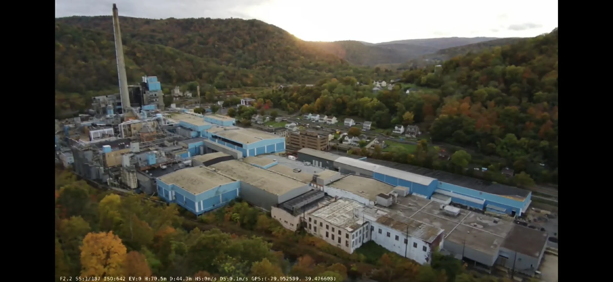
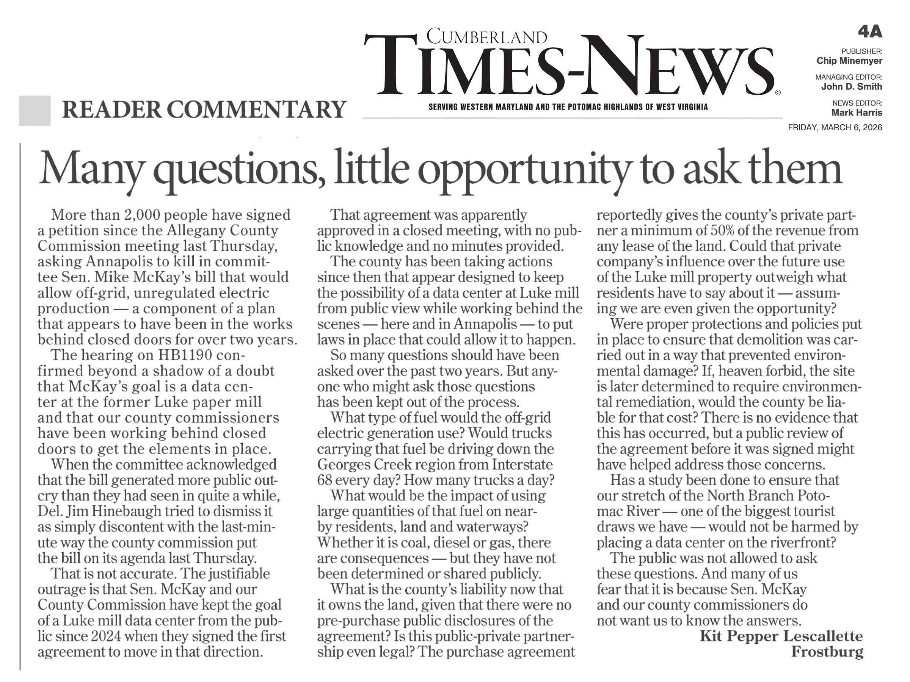
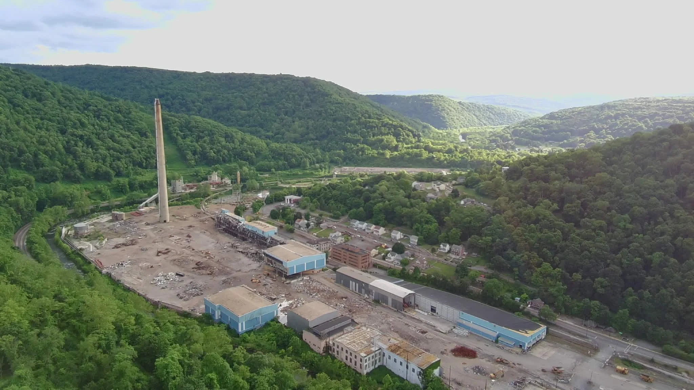

By the time Allegany County residents heard the Luke Mill redevelopment agreement presented at a public meeting, the county already owned the property. Money had changed hands. Land had been purchased in two states. Demolition was underway.
What the public was being introduced to on July 10, 2025, was an arrangement county officials had already spent months putting into motion.
According to a complaint submitted to Maryland’s Open Meetings Compliance Board, the arrangement began with a Memorandum of Understanding dated August 7, 2024, between Allegany County and Port River West, LLC. The complaint originally identified the following day’s closed commissioners’ meeting as the occasion when that agreement was approved or authorized. However, a review of that meeting’s minutes provided by the county for a separate complaint showed that no discussion of this Luke Mill purchase was had that day. When the commissioners and staff met to approve the deal that they would then act on is unknown.
Nearly eleven months after the date on the signed original MOU, the county presented the situation to the public for the first time.
For residents, that gap matters. It was the period when questions could have been asked about the county’s role, the private company’s benefits, the financial obligations, and the future of a property whose redevelopment could affect surrounding communities for decades.
Instead, residents were introduced to a deal committed to and underway.

A Partnership Already Formed and in Play
At the July 10, 2025 meeting, County Administrator Jason Bennett presented a final agreement with Port River West, LLC as something that had been “in the works for a while.” The original signed MOU dated in August 2024 was not mentioned. He asked commissioners to “memorialize the partnership” the county had formed with Port River West and approve the final agreement.
His explanation referenced two private companies, Bill Miller Equipment Sales and Firestone Restorations, Latrobe, PA, as providing $2 million to acquire ownership of the mill’s aboveground assets, with the county helping acquire the underlying land in Maryland and West Virginia. County ownership stopped the property taxes on the Maryland land, but West Virginia property taxes continued to be levied.
Public records identify two purchases: West Virginia property acquired on November 26, 2024, for $777,780, and Maryland Luke Mill parcels acquired on January 9, 2025, totaling $1,272,770. Together, the purchases amounted to approximately $2.05 million.
At that meeting Jason Bennett stated that $2 million came from private funds, not mentioning another $50,000 that had been supplied by the county. There are no public votes authorizing those expenditures in the county commission’s agendas or minutes.
In this final agreement, the proposed agreement would extend for thirty years. (The original MOU stated twenty years.) Bennett explained that future lease or sale revenues for 30 years would be divided equally between the county and Port River West, with a 60 percent share going to the company when it brought the entity to the county. Interesting that at this time, two acres of the Luke property had been already leased on the WV side for $3,000 a month, and there is email obtained later that indicates that the profit split was already underway for at least 3 months.
The two commissioners present approved the agreement without discussion or questions. Commissioner Creade Brodie was not present at this meeting. His legally required financial disclosure statements, which should have been submitted annually, were submitted seven months later in February of 2026 and showed that he had been employed by Bill Miller Equipment Sales since May of 2023. His absence from the July 10, 2025 vote leaves unanswered questions about his participation in earlier discussions or decisions.
A public vote had occurred. But the public had not witnessed the deliberations that produced the arrangement, the land purchases that made it possible, or the decisions that shaped its terms.
Who Benefits, and Who Carries the Responsibility?
There are also questions about the businesses involved and the distinction between owning the land and controlling the value above it.
Bennett’s presentation named Bill Miller Equipment and Firestone Restorations as the companies that agreed to invest the acquisition money. The agreement, however, assigned rights to Port River West, LLC, owned by Marie Miller, Bill Miller’s spouse.
These relationships deserve a clear public explanation, as would have happened had the arrangement been discussed by the commissioners as it was being crafted. The only public mention of this business arrangement is the July 10, 2025, vote and the commissioners simply voted yes. Did they have these same questions or were they told about these details all along? Without that transparency it is impossible to understand who represented each business, who received each benefit, and how the county evaluated the arrangement as having a public benefit, as required by law.
Demolition rights carry financial significance, too. Recoverable materials and aboveground assets can have substantial value. The public needs an accounting of what the private company received in exchange for its investment, alongside the value and responsibilities retained by the county. And an explanation why the business opportunity was given to this company and not put out to bid. No one will ever know if the value of the above-ground assets is more or less than $2 million. Might someone have bid more? And would they have been provided the long-term benefits.
A Partner or an Independent Contractor
Another question lies within the July 2025 agreement itself.
Although county officials described the arrangement as a partnership, as did the original MOU, a provision in the Final Agreement defines Port River West as an independent contractor and states that the agreement did not create a partnership or joint venture.
That distinction invites practical questions. How was the contractor selected? Which procurement requirements applied? Who bears responsibility for demolition, permits, environmental obligations, and additional work? As of October 2026, neither the county nor the private company has secured a permit for the demolition work.
There are also questions about whether provisions covering further demolition work could allow additional contracts without competitive bidding. The agreement gives the private company right of first refusal but do applicable procurement rules apply?
Public discussion before commitments were made would have given residents (and commissioners?) an opportunity to ask those questions while the answers could still influence the deal.

Ownership Brings Bills and Environmental Questions
The county’s responsibilities did not end when it acquired the land.
Public records indicate that more than $41,000 in taxes and late fees on the West Virginia property remain unpaid. Mineral County Tax Office stated that a certified letter demanding payment was sent to the county in June 2026.
A copy of the letter was requested under Maryland’s Public Information Act. Their lack of response on that request is the subject of a current complaint citing over 15 Public Information Requests, with the county responding with letters at the ten-day and thirty-day marks saying it was working on the request, but providing no documents.
There is a separate unanswered question about taxes owed before the purchase. Multiple inquiries to Mineral County and the State of West Virginia have not produced confirmation that over $450,000 in back taxes due at the time of the sale were paid at closing or afterward. That leaves residents without a full accounting of the tax obligations the county acquired, what it has paid, and what remains outstanding.
Environmental responsibility presents a potentially larger concern. The county has confirmed that it did not secure the protections associated with bona fide prospective purchaser status before acquiring the former industrial property. Those protections can help shield a qualifying purchaser from certain federal cleanup liabilities for contamination that predates its ownership, provided the legal requirements are met.
Whether Allegany County qualifies for that protection, and what environmental liability it may carry, requires examination of its acquisition records and environmental due diligence. Residents deserve to see what assessments were completed, what protections were established, and who is responsible if contamination requires cleanup.
These are concrete questions about the cost of ownership. A redevelopment agreement may divide future revenues, but the public also needs to know how it divides the bills, the risks, and the responsibility for problems left behind.
The Datacenter Question
The future use of Luke Mill adds another layer.
At the same July 10 meeting, commissioners approved a 180-day lease option involving 16.48 acres of county-owned West Virginia land for Off Grid Energy Production to evaluate natural gas availability.
At a February 26, 2026, county commission work session, the commissioners discussed supporting legislation, sponsored by Senator Mike McKay, that would enable off-grid electrical generation. Later, legally obtained email confirmed that the Luke Mill purchase was connected to plans for a potential data center development. Additional confirmations of the plans and Senator McKay’s involvement occurred at the bill’s committee hearing and in an interview by McKay on WCBC radio.
Those connections warrant examination. They do not establish that a final data center project has been approved. Residents nevertheless deserve to know what uses have been discussed, what obligations exist, and what decisions remain open. And what commitments have been made.

The Public’s Place in the Process
Luke Mill represents a major redevelopment opportunity. Its future could bring jobs and investment. It could also bring obligations, environmental questions, and financial consequences extending well beyond the current commissioners’ terms. As of October 2026, the demolition is still underway, with no permit, as the county’s independent contractor (Port River West, LLC) continues to remove and recycle debris from the site. The value of the demolition production is unknown. The status and proper disposal of any hazardous materials is undocumented and uncertain as to who has liability for those issues.
Residents should have been able to follow how the county evaluated those possibilities.
When a thirty-year arrangement reaches its first public presentation after the land has been purchased and implementation has begun, the public is left trying to reconstruct decisions it should have been able to observe as they happened.